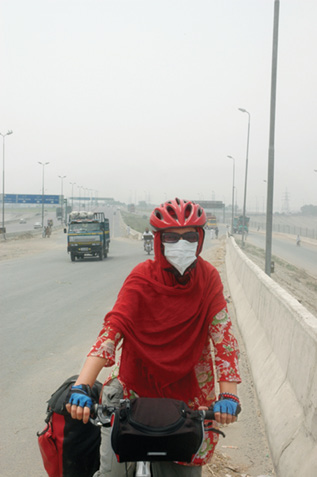

HİNDİSTAN, 6 Ağustos
Doğubeyazıt’dan aldığım alüminyum ayaklar kırıldı. Tur için kullanılacak malzemeler, özellikle fakir ve geri kalmış ülkelere gidiliyorsa çelik olmalı kuralını uygulayamadık. Şimdi zor durumdayız. Çeliği her yerde kaynak yaptırmak mümkün. Fakat alüminyum öyle değil. Gerekirse çelik bir kadro bile kaynakla tekrar kullanılacak hale getirilebilir. Bugün, dünyanın her ülkesinde, küçük bir kasabada bile kaynak makinesi bulmak mümkün. Büyük şehirlerde lastik ararken bir yandan da kaynakçı bakıyorum. Sokaklar zaten pis ve bakımsız, sanayi bölgesine benzeyen yerlere doğru yaklaştıkça durum daha vahim bir hal alıyor. 13 tane aşı olmamızın güvencesi var içimizde. Yoksa buralarda böyle rahatça dolaşamayız. Türkiye’den aşina olduğumuz bir sanayi çalışanı tipi vardır ya aklımızda; yağ bulaşmış kıyafetler, karışık saç sakal, yıpranmış eller. Tarif edecek olsak, Hindistan’da da hiç değişmiyor sanayi çalışanı profili.
Kaynak makinesi veya demirci gördüğümde, elimdeki iki parçaya ayrılmış ayaklığı göstererek bir yandan da yerde duran makineyi işaret ederek, iki parçayı birbirine vurmaya başlıyorum. Bence, “kaynak yaptırmak istediğimi” gayet güzel anlatıyorum. Fakat onlar tarzanca bile sayılamayacak bu yöntemden ne anlıyorlar? Bilmiyorum. Alüminyumu kaynak yapabilecek makinenin nasıl bir şey olduğu konusunda maalesef bir fikrim yok. Herkesin bildiği şu büyükçe bir küpe benzeyen, klasik kaynak makinesi gibi midir? Bilmediğimden, metal işi yaptığını önündeki molozlardan anladığım her dükkâna soruyorum. Sorduğum her dükkânda başıma onlarca kişi toplanıyor. İşyerindeki herkes parçaları eline alıp elden ele sırayla dolaştırıyor. Parçalara dokunmayan çocuk yaşta tek bir çırak dahi kalmıyor. Dönüp dolaşıp bana geri geldiğinde anlıyorum ki burada yapılamayacak bu iş. Yeni bir işyeri aramaya başlıyorum. Hintlilerin yardım çabaları kafamı karıştırmaktan öte işe yaramıyor. “Okey okey” diyerek tarif ettikleri yöne doğru uzaklaşıyorum. Alüminyum parçalar böyle giderse birbirine vurmaktan aşınacak ama ben kaynakçı bulamayacağım sanırım.

Pakistan Lahore
Kronik astımı olan İnci ve Soner için zor günler.